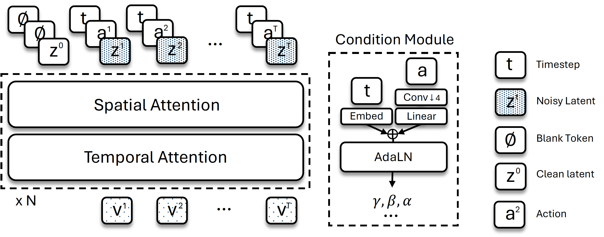

Georgia Institute of Technology·† Project lead·* Equal contribution
A benchmark of 8 physics-rich environments spanning four interaction regimes — rigid-body, deformable, particle, and kinematics — paired with ACWM-DiT, a latent diffusion transformer trained with flow matching. We probe whether modern action-conditioned video models actually learn physics, or merely appearance.
ACWM-Phys covers four physical interaction regimes — rigid-body, deformable, particle, and kinematics — each with a controlled out-of-distribution shift (more / fewer water particles, additional cubes, larger cloth, expanded workspace).
ACWM-Phys is designed to answer two questions about action-conditioned video world models:
Q1
How well can ACWMs learn different types of physics?
Existing benchmarks are confined to egocentric navigation or narrow rigid-body manipulation. ACWM-Phys spans rigid-body, deformable, particle, and kinematic regimes so we can finally compare prediction quality across physical phenomena rather than within a single domain.
Q2
Can they generalize beyond the training distribution?
Every environment ships a physically meaningful, exactly reproducible distribution shift — doubled particle counts, unseen cube counts, larger cloth, expanded goal regions — so we can measure the InD → OoD gap and pinpoint where diffusion world models still rely on appearance shortcuts.
Each environment ships 1,000 InD training trajectories, 50 InD test trajectories, and 100 OoD test trajectories with a physically meaningful distribution shift — unseen cube counts, expanded workspaces, doubled particle counts, larger cloth, or shifted goal regions. Every shift is exactly reproducible inside the simulator. Videos below are the ground-truth simulator rollouts, side-by-side InD vs OoD, so the reader can see what the distribution shift is.
Rigid-body
Push Cube a ∈ ℝ2
A disk pusher translates 1–5 colored cubes to a target.
InD 1 cubeOoD 4+ cubes
Rigid-body
Stack Cube a ∈ ℝ7
A Franka Panda picks the red cube and stacks it on the green one.
InD seen targetOoD unseen placement
Deformable
Push Rope a ∈ ℝ2
A pole pusher deforms a flexible rope (PyFlex).
InD trained lengthOoD unseen length
Deformable
Cloth Move a ∈ ℝ3
Two arms drag a cloth over a fixed sphere with a shared 3D displacement.
InD trained cloth sizeOoD larger cloth
Particle
Push Sand a ∈ ℝ7
A board pusher rearranges granular sand particles (PyFleX).
InD ≤ 73K particlesOoD ~145K particles
Particle
Pour Water a ∈ ℝ4
An arm pours water into a cup via tilt and translation.
InD 20–32 fill layersOoD 14 / 48 layers
Kinematics
Robot Arm a ∈ ℝ7
A 7-DoF Franka Panda reaches targets via cuRobo planning (Isaac Sim).
InD trained workspaceOoD expanded workspace
Kinematics
Reacher a ∈ ℝ2
A 2-link MuJoCo arm reaches goals via joint torques.
InD central goalsOoD corner-sector goals
Each pane shows the ground-truth simulator rollout (left side of the original recording). Use the pills above to filter by physics regime.
§ 2 — Model
ACWM-DiT
A bidirectional Diffusion Transformer that denoises future latent video tokens conditioned on the past frame and an action sequence, trained end-to-end with flow matching in the latent space of a frozen causal video VAE.

ACWM-DiT: noisy latent tokens are processed by stacked DiT blocks with alternating spatial and temporal self-attention, modulated by a joint timestep–action embedding.
§ 3 — Main results
In-distribution & out-of-distribution rollouts
For each environment we evaluate ACWM-DiT-S (100k steps, 50 denoising steps) on a matched InD and OoD split. The pattern is striking: simple geometry generalizes; deformation, particle physics, and high-DoF kinematics do not. Every clip shows ground truth (left) | prediction (right); InD on top, OoD below.
Rigid-body
Push Cube
InD Ground truth | Prediction
1/4
OoD Ground truth | Prediction
1/5
Rigid-body trajectories transfer cleanly across the distribution shift. Cubes occasionally vanish in the final frames of 4-cube OoD scenes — an appearance-shortcut tell.
Rigid-body
Stack Cube
InD Ground truth | Prediction
1/4
OoD Ground truth | Prediction
1/4
Coarse pick-and-place survives; the Franka end-effector blurs as target positions move outside the trained set.
Deformable
Push Rope
InD Ground truth | Prediction
1/4
OoD Ground truth | Prediction
1/4
Coarse rope shape is preserved across unseen lengths, but the motion-region (masked) error roughly doubles — the model bends the rope plausibly while missing fine contact response.
Deformable
Cloth Move
InD Ground truth | Prediction
1/4
OoD Ground truth | Prediction
1/4
The largest OoD drop in the benchmark. Contact-rich, large-scale deformation outruns what an AdaLN-conditioned diffusion model captures from appearance alone.
Particle
Push Sand
InD Ground truth | Prediction
1/4
OoD Ground truth | Prediction
1/4
Doubling particle count exposes a fine-grained redistribution gap — overall pile structure persists, micro-dynamics blur.
Particle
Pour Water
InD Ground truth | Prediction
1/4
OoD Ground truth | Prediction
1/4
Pouring trajectories repeat, so error stays bounded — but under unseen volumes the model hallucinates plausible-but-wrong fill levels.
Kinematics
Robot Arm
InD Ground truth | Prediction
1/4
OoD Ground truth | Prediction
1/4
7-DoF Franka articulation breaks first. AdaLN's single conditioning vector becomes a bottleneck — see the cross-attention ablation below.
Kinematics
Reacher
InD Ground truth | Prediction
1/4
OoD Ground truth | Prediction
1/4
The cleanest generalizer in the suite: 2-link joint trajectories live on a low-dimensional manifold the model has truly learned.
Full quantitative results
ACWM-DiT-S, 100k training steps, 50 denoising steps. MSE values are scaled by 10−3.
Category
Environment
In-distribution
Out-of-distribution
ΔSSIM
MSE↓
SSIM↑
PSNR↑
MSE↓
SSIM↑
PSNR↑
Rigid
Push Cube
2.92
0.955
25.35
2.95
0.954
25.30
−0.001
Stack Cube
5.52
0.889
22.58
7.00
0.872
21.55
−0.017
Deformable
Push Rope
0.21
0.988
36.70
0.33
0.985
34.83
−0.003
Cloth Move
10.67
0.920
19.72
23.82
0.864
16.23
−0.056
Particle
Push Sand
0.52
0.975
32.85
1.53
0.941
28.16
−0.034
Pour Water
2.63
0.911
25.80
3.49
0.874
24.57
−0.037
Kinematics
Robot Arm
1.43
0.969
28.43
6.56
0.902
21.83
−0.067
Reacher
0.26
0.992
35.85
0.27
0.992
35.65
0.000
§ 4 — Ablations
What actually moves the needle?
We probe four design axes: action conditioning, latent space, action dimensionality, and model scale. Each finding is anchored on the same evaluation protocol as the main results.
Action conditioning
Cross-attention scales with action dimensionality — AdaLN doesn't
At da = 2 (Push Cube, Push Rope), AdaLN and cross-attention tie. At da = 7 (Robot Arm) cross-attention recovers +3.18 dB InD and +1.55 dB OoD. At da = 8 (Cloth Move), it slightly hurts InD but yields a striking +6.59 dB OoD: AdaLN's single global vector can't carry per-arm signals.
A causal video VAE with 4× temporal compression outperforms a frame-independent image VAE on both InD and OoD — even on a highly stochastic particle task like Pour Water. Temporal coupling in latent space matters more than higher spatial fidelity per frame.
VAE
Temp. compression
InD PSNR
OoD PSNR
FluxVAE
1×
24.89
24.09
WanVAE (ours)
4×
25.80
24.57
Action dimensionality
Richer actions hurt InD but unlock OoD generalization
On Cloth Move, expanding the action space from a shared 3-DoF displacement to full 8-DoF per-arm control lifts OoD PSNR from 16.23 → 21.60 dB (a +5.37 dB jump), at a modest InD cost. Richer control signals also act as richer observations.
Action space
da
InD PSNR
OoD PSNR
Shared Δxyz
3
19.72
16.23
Per-arm Δpose + grasp
8
18.91
21.60
Model scale
Bigger helps OoD more than InD — with diminishing returns
Scaling DiT-S → DiT-M → DiT-L (200M → 600M → 800M) yields the largest gains on the OoD split: Robot Arm OoD PSNR climbs 21.84 → 23.51 dB. The S→M jump dominates; M→L is incremental at the current data scale.
Model
Params
Cloth Move · InD
Cloth Move · OoD
Robot Arm · InD
Robot Arm · OoD
DiT-S
~200M
19.68
16.49
28.38
21.84
DiT-M
~600M
19.89
16.98
29.04
23.11
DiT-L
~800M
20.01
17.24
29.27
23.51
§ 5 — Takeaways
What we learned about diffusion ACWMs & physics
01
Generalization tracks state dimensionality, not physics category.
Low-dimensional geometric dynamics (rigid-body translation, 2-link joints) transfer robustly. High-dimensional or stochastic dynamics (cloth, sand, 7-DoF arm) expose the model's reliance on appearance statistics.
02
Cross-attention beats AdaLN once actions are high-dimensional.
At da = 2 the two are indistinguishable. At da = 7–8, cross-attention recovers +3.18 dB InD on Robot Arm and +6.59 dB OoD on Cloth Move — AdaLN's single global vector becomes a per-joint bottleneck.
A causal VAE with 4× temporal compression beats a frame-independent encoder. Expanding Cloth Move to full per-arm control yields +5.37 dB OoD at a small InD cost — richer signals double as richer observations.
04
Models still capture visual statistics, not physical laws.
OoD failures — cubes vanishing, water levels hallucinated, articulated arms blurring — consistently surface where appearance shortcuts can no longer fake the answer. ACWM-Phys gives the community a clean lever to push diffusion world models toward physical structure.
Stress-test your world model on ACWM-Phys
Dataset, checkpoints, and evaluation code are released. Drop your model in — we report masked-MSE / SSIM / PSNR on the same InD & OoD splits.
@article{xue2026acwm,
title={ACWM-Phys: Investigating Generalized Physical Interaction in Action-Conditioned Video World Models},
author={Xue, Haotian and Chen, Yipu and Ma, Liqian and Zhao, Zelin and Moukheiber, Lama and Zhu, Yuchen and Che, Yongxin},
journal={arXiv preprint arXiv:2605.08567},
year={2026}
}